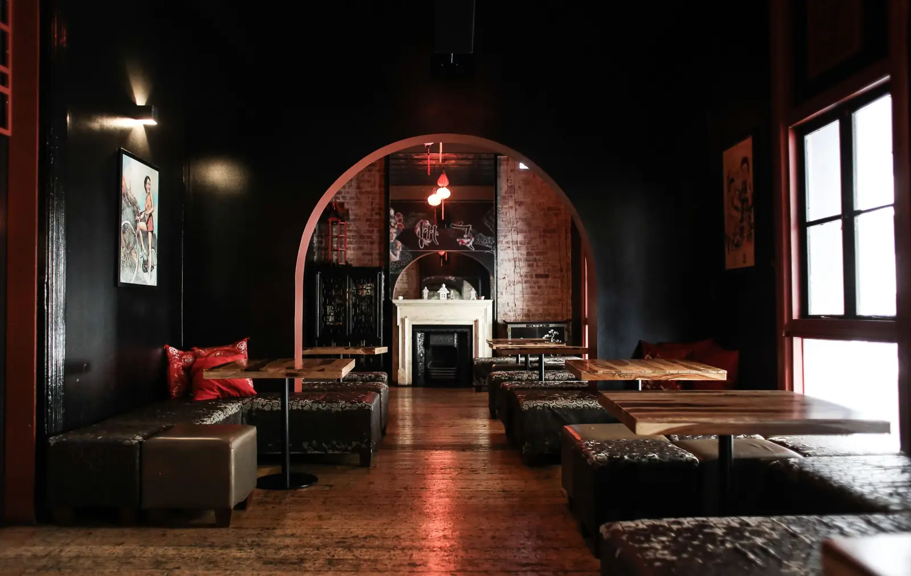
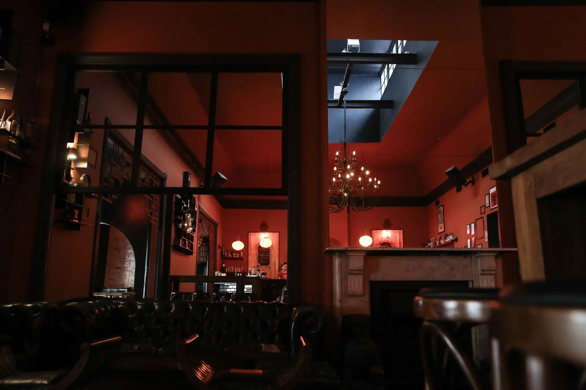
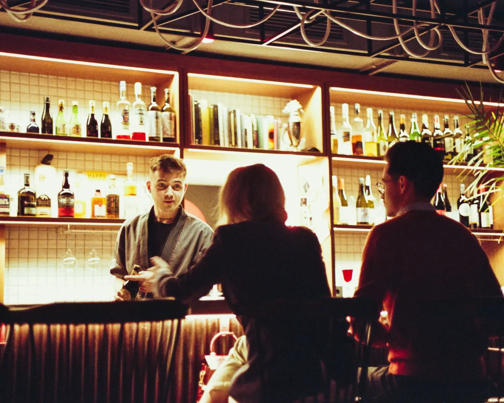
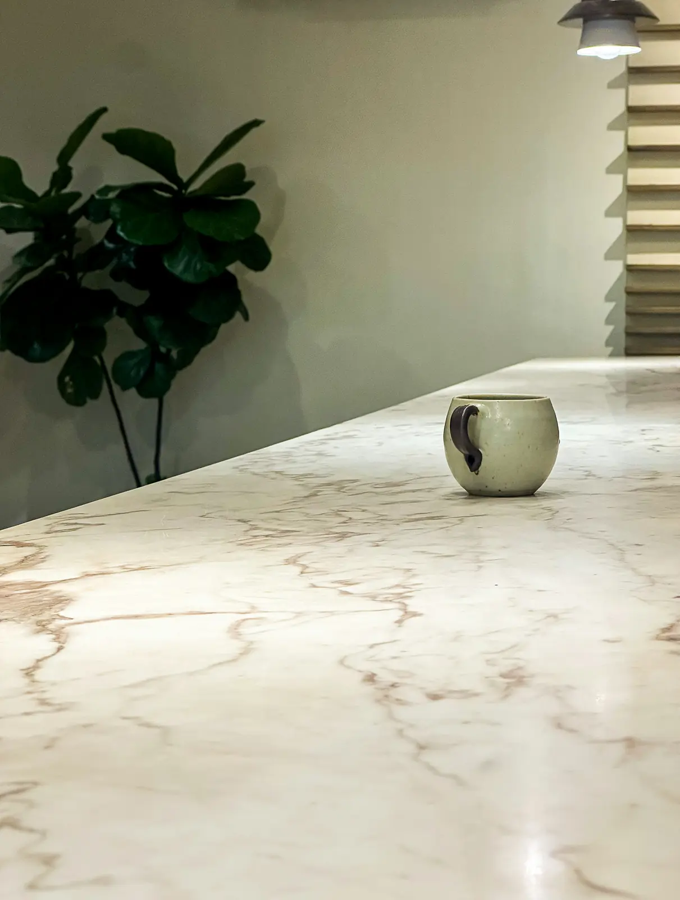
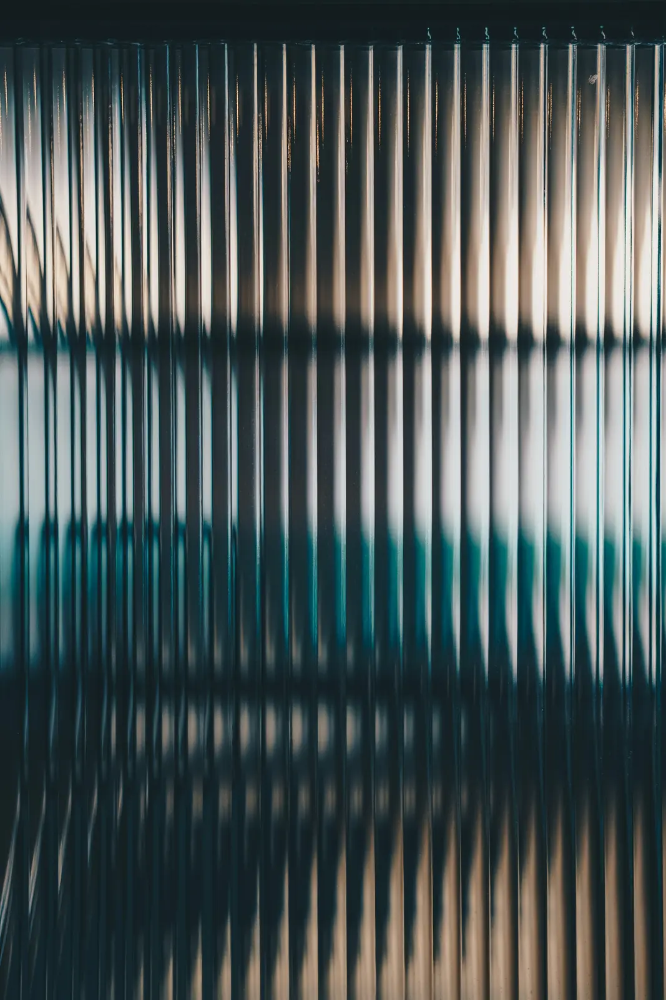

Stillroom
Placeholder project. The name, quote and photographs stand in for real work.
A first-floor cocktail bar in a Connaught Place colonnade, designed for 1am and built to take it.
- Location
- Connaught Place, New Delhi, India
- Type
- Cocktail bar
- Size
- 150 m²
- Covers / seats
- 56 seats + 30 standing
- Scope
- Concept · Interior design · Bar design · Lighting · Acoustics · Joinery · Build
- Duration
- 6 months, brief to opening · 14 weeks on site
- Opened
- January 2026
The brief
A bar team known for its house-made cordials wanted a room that works early and late: 56 seated at seven, 30 more standing by midnight. The unit was a first-floor office with a low ceiling and a single staircase.
The move
The back-bar is the stage.
A 9-metre back-bar of smoked-glass shelves, lit from within, is the brightest thing in the room after ten, and every seat and standing spot faces it. Lighting scenes step the rest of the room down around it, three times a night.
What we did
- Concept
- Interior design
- Lighting
- Joinery
- Build
- Bar design
- Acoustics


FilmPlaceholder stock footage


The details



-
01Stations
Two bar stations drawn at full size with the head bartender, from speed rail to ice well to glass washer. Nothing is more than one turn away.
-
02Bar top
Honed Udaipur green marble, sealed for citrus and sugar, with an oiled-brass edge that gets better as it wears.
-
03Scenes
Lighting on a timer at 19:00, 22:00 and 00:30. Nobody on the floor touches a switch.
The build
We built in a working market: deliveries before 10:00, noisy works after the shops shut. The bar counter was made off-site in three sections and lifted in through the front window in a single night.
The outcome
At 01:00 on a full Saturday you can still hear the person next to you. The acoustic panels are hidden behind the fabric ceiling and the banquette backs.
Weeknights run from one station; the second opens only when the room needs it.
In their words
“They designed the bar for the night we actually have, not the one in the mood board. And then they built it.”
Credits
- Photography
- Placeholder stock photography
- Design & build
- Two Squares
- With
- Acoustic consultant: [Consultant] · Stone: [Supplier]

Opening something like this?
Send us the floor plan and the opening date. We’ll come back with how the room could work.